艦これ夏イベント2015：E6 ソロモン海東部海域
執筆日時：
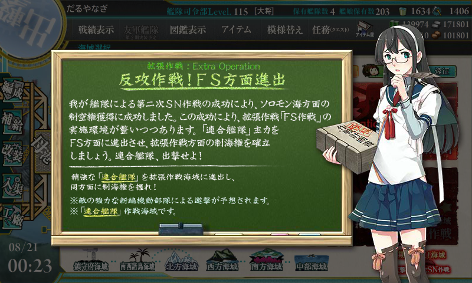
E6 ソロモン海東部海域を木曜日の晩にクリア。
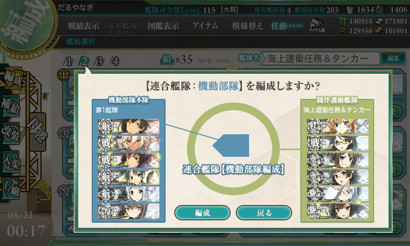
高速戦艦を使いきっていて、機動部隊の第二艦隊に戦艦がいないという緊急事態に。
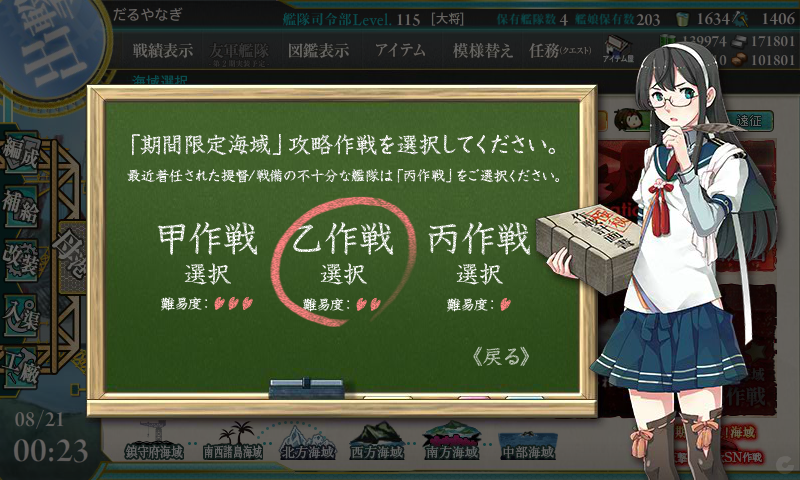
というわけで、難易度は【乙】に下げた。そのおかげか、割とすんなりクリアできたように思う。
マップと編成
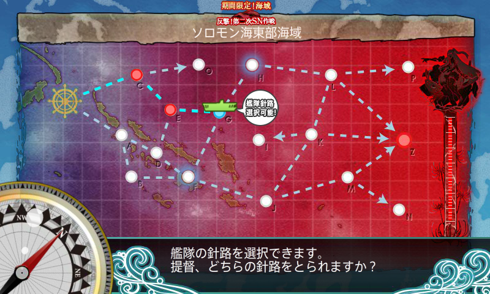
- 第一艦隊
- 飛龍改二(Lv97)：艦隊司令部施設、のちにはずして順番も後ろに
- 武蔵改(Lv104)：徹甲弾
- 大和改(Lv100)：徹甲弾
- 瑞鶴改(Lv98)
- 翔鶴改(Lv112)
- 大鳳改(Lv129)
- 第二艦隊：順番はときどきイジった
- 阿武隈改二(Lv94)：甲標的＋連撃
- 妙高改(Lv88)：連撃＋夜戦道具（照明弾）＋夜偵
- 摩耶改(Lv93)：連撃＋対空カットイン＋夜偵
- 島風改(Lv84)：カットイン＋熟練見張り員＋夜偵
- 雪風改(Lv92)：カットイン＋熟練見張り員＋夜偵
- 秋月改(Lv82)：連撃＋対空カットイン＋夜戦道具（探照灯）
第二艦隊に高速戦艦がいれられれば、もっと安定したと思う。
戦闘経過
C → E → G → H → L → Z。15戦出撃、10回ボス到達、S 勝利4回。
| C | E | H | L | Z | 備考 | |
| 1 | S | B | B | S | A | |
| 2 | S | B | B | S | A | |
| 3 | S | B | B | S | S | 決戦支援も出してみる |
| 4 | S | B | A | S | S | |
| 5 | S | B | C | S | ||
| 6 | S | B | B | S | A | |
| 7 | S | B | B | S | A | |
| 8 | S | A | B | S | ||
| 9 | S | B | B | S | A | |
| 10 | S | A | B | S | S | 艦隊司令部施設の装備やめ。道中支援を出す |
| 11 | S | |||||
| 12 | S | |||||
| 13 | S | A | B | S | S | |
| 14 | S | |||||
| 15 | S | B | A | S | A | ゲージ破壊 |
最後の方でなぜか所詮撤退を強いられまくってハゲそうになった。
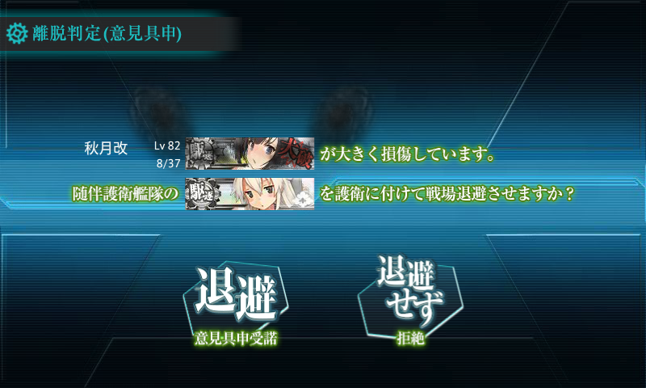
艦隊司令部施設のお世話になってみたけど、旗艦ボーナスの活用＋道中支援をちゃんと出すほうがよかったかもしれない。
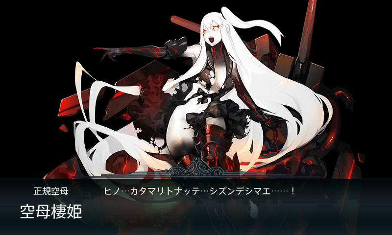
ボスのみの戦績。
- A Ｔ字戦(有利)
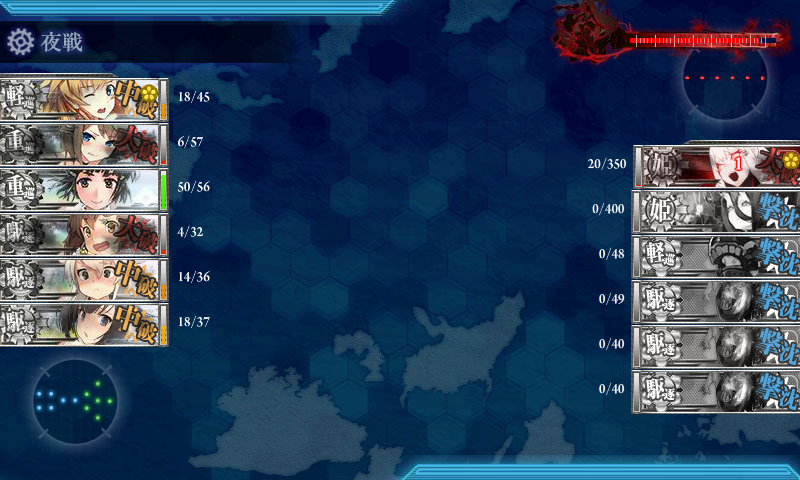 - A 同航戦
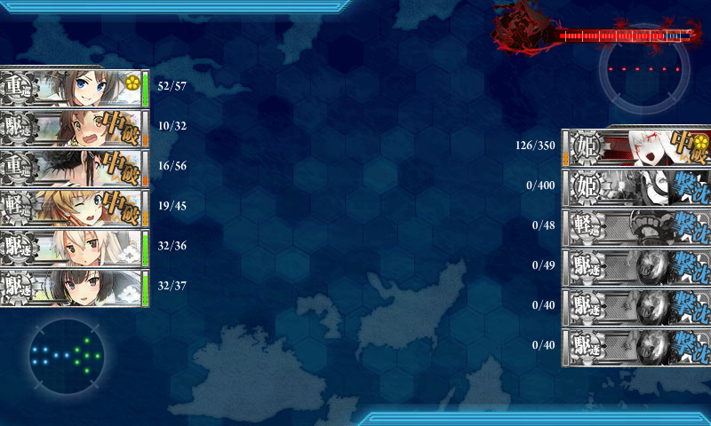 - S 反航戦：退避艦をだしていても運次第で S は十分とれる。でも、航空戦で空母を失ったりした場合は、司令部施設があっても撤退した方がいいと思った。
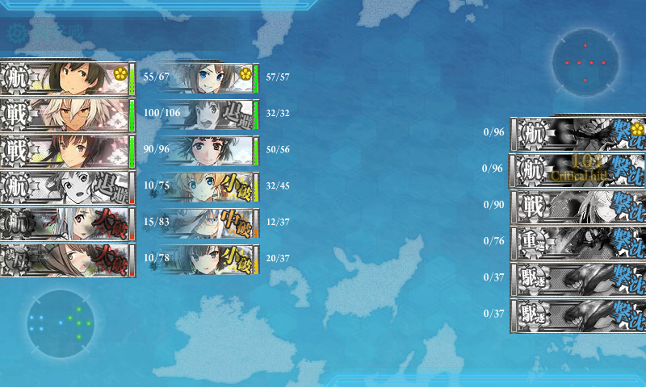 - S 同航戦：この後全艦沈める
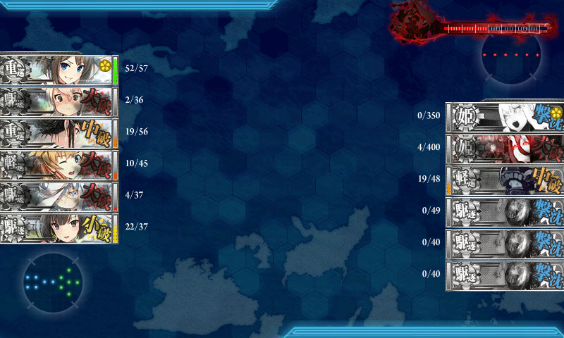 - A 反航戦
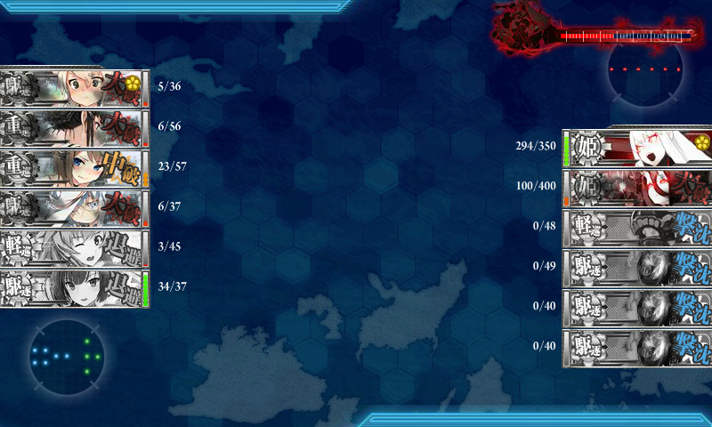 - A 同航戦
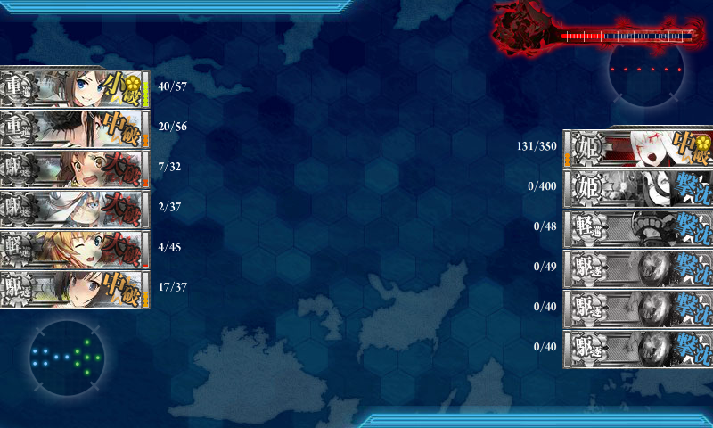 - A 反航戦（撮り忘れ）
- S 同航戦
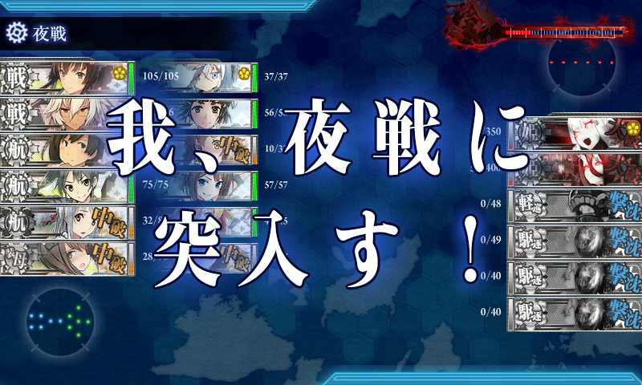 - S 反航戦
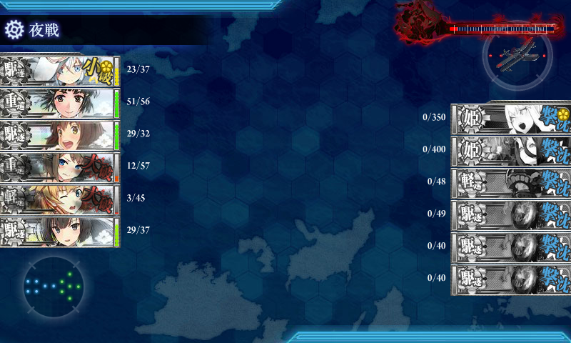 - A 同航戦：ラストはツ級軽巡が増える。夜戦戦力がちょっとキツかったけど「妙高」さんがスナイプしてくれた
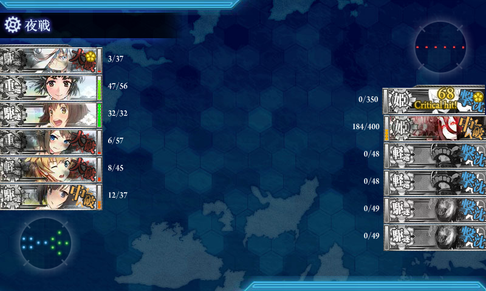